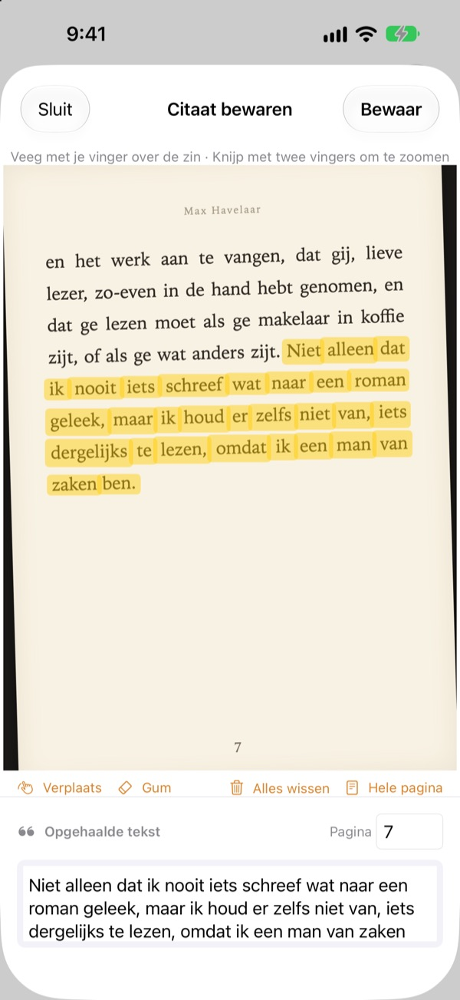
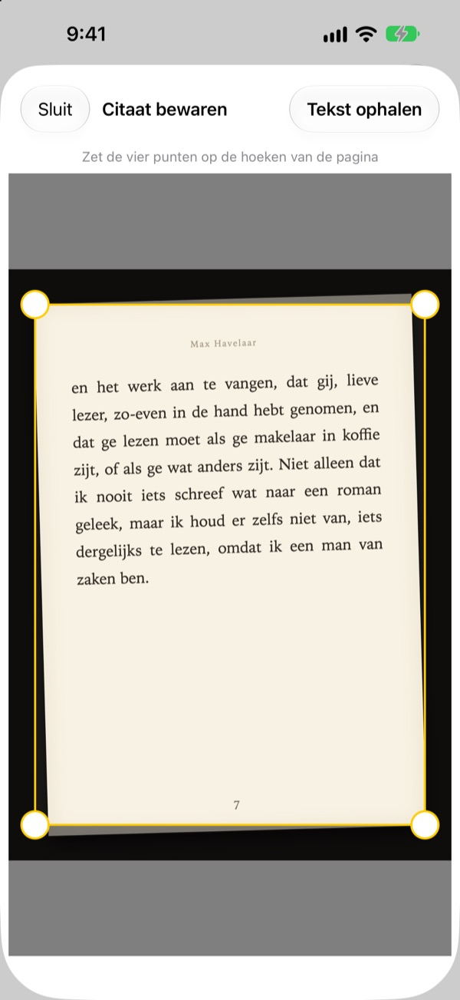
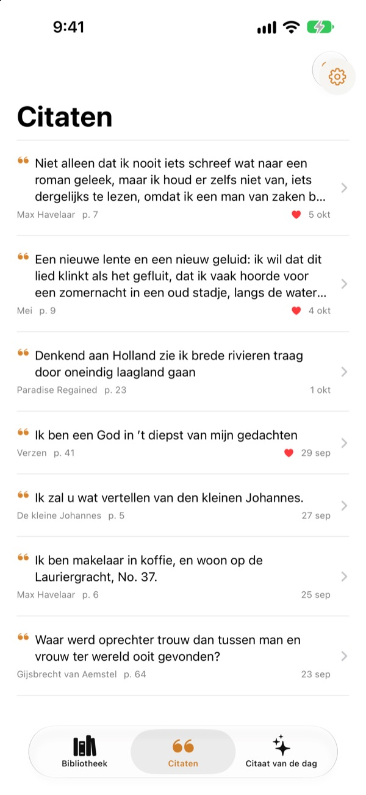
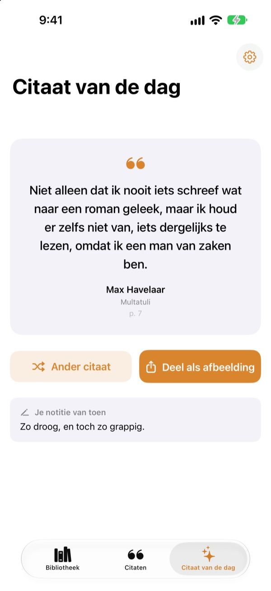

Onderstrepen
zonder pen
Fotografeer de pagina, veeg met je vinger over de zin die je mooi vindt, en alleen die zin wordt als tekst bewaard. Boek en paginanummer gaan mee.
Alle functies gratis, zonder advertenties.

Probeer het eens
Veeg met je vinger of muis over een zin op de pagina hieronder. Alleen de woorden die je raakt, komen op de kaart.
Waar blijven die mooie zinnen?
In een boek van de bibliotheek mag je niet strepen. Een foto van de pagina verdwijnt tussen duizenden andere in je fotorol. Typ je de zin over in een notitie-app, dan ontbreken titel en paginanummer meestal. Bookmark Shot bewaart de zin, het boek en de pagina in twee gebaren: fotograferen en vegen.
Scheve foto, rechte pagina
Zet na de foto de vier hoeken goed, en zelfs een schuin genomen foto wordt rechtgetrokken als een vel papier. Hoe scherper de letters, hoe beter de herkenning.
Foto’s die al in je fotobibliotheek staan, werken ook.

Al je citaten op één plek
Je boeken staan in een bibliotheek vol kaften en je citaten in één lijst. Zoek op zin, notitie of boektitel, en geef de citaten die je nog eens wilt lezen een hartje.
Een boek voeg je toe met één foto van de kaft. Titel en auteur worden voor je gelezen, en ook het ISBN als de streepjescode op de achterkant in beeld is.

Vergeten zinnen komen terug
Citaat van de dag brengt elke dag een van je bewaarde citaten terug, samen met de notitie die je erbij schreef. Zet het met een widget op je beginscherm of toegangsscherm.
Mooi gevonden? Maak er een kaart in papierlook van en deel die.

In drie stappen aan de slag
- 1
Fotografeer de kaft
Titel en auteur worden ingevuld. Pas ze aan voordat je bewaart.
- 2
Fotografeer de pagina
Zet de vier hoeken goed en de pagina wordt recht.
- 3
Veeg over de zin
Het paginanummer wordt gevonden en meebewaard.
Gereedschap in het markeerscherm
- Vegen met je vinger
- selecteert alleen de woorden die je raakt
- Knijpen
- zoom in om preciezer te vegen
- Verplaatsen
- sleep een ingezoomde pagina rond
- Gum
- haalt geveegde woorden weer weg
- Alles wissen
- verwijdert alle geselecteerde woorden
- Hele pagina
- bewaart alle tekst op de pagina
- Paginaveld
- het gevonden paginanummer, aan te passen
Met VoiceOver tik je dubbel op een regel om die toe te voegen of weg te halen.
Alle functies zijn gratis
Gratis
- Boeken toevoegen via de kaft, ISBN via de streepjescode
- Pagina’s rechttrekken en markeren met je vinger
- Automatische paginanummers
- Bibliotheek, citaten zoeken en favorieten
- Citaat van de dag met widgets voor beginscherm en toegangsscherm
- Delen als kaartafbeelding
- Synchronisatie via iCloud
Steun de ontwikkelaar
- Geef via Instellingen een kleine fooi, als je dat wilt
- Een fooi ontgrendelt niets. De app blijft precies hetzelfde
Geen advertenties, geen abonnement.
Vragen
Worden mijn foto’s of citaten ergens naartoe gestuurd?
Nee. De tekstherkenning gebeurt volledig op je apparaat met Apple Vision, en je foto’s en citaten gaan nooit naar een server. Het werkt ook offline. Lees meer in het privacybeleid hieronder.
Welke talen kan de app lezen?
De tekstherkenning wordt door iOS op je apparaat gedaan. Boeken in het Koreaans, Engels, Japans, Chinees, Russisch en de meeste West-Europese talen worden gelezen, en op recente iOS-versies ook Thai, Vietnamees, Turks, Indonesisch, Pools, Tsjechisch, Nederlands en de Scandinavische talen. Grieks kan nog niet worden herkend.
Hoe kies ik alleen de zin die ik wil?
Veeg na het fotograferen met je vinger over de zin, alsof je een markeerstift gebruikt, en alleen die woorden worden geselecteerd. Knijp om in te zoomen voor meer precisie. Er zijn ook Gum, Alles wissen en Hele pagina.
De titel of auteur klopt niet.
De kaftherkenning gaat af op de grootte van de letters en kan zich dus vergissen bij heel sierlijke kaften. Je kunt titel en auteur aanpassen voordat je het boek bewaart.
Het paginanummer klopt niet.
Dat wordt gelezen uit de cijfers aan de rand van de foto. Pas het gewoon aan in het paginaveld voordat je bewaart.
Kan ik mijn citaten op meer apparaten zien?
Ja. Ben je met hetzelfde Apple Account bij iCloud ingelogd en staat iCloud Drive aan, dan worden je boeken en citaten automatisch gesynchroniseerd.
Hoe voeg ik de widget toe?
Houd je vinger op het beginscherm, tik op ‘Wijzig’ > ‘Voeg widget toe’ en kies Bookmark Shot. Voor het toegangsscherm houd je je vinger erop en tik je op ‘Pas aan’. Daar verschijnt Citaat van de dag.
De camera werkt niet.
Controleer in Instellingen > Bookmark Shot of toegang tot de camera en foto’s is toegestaan. Om foto’s te maken heb je een echte iPhone nodig.
Wat heb ik nodig?
Een iPhone met iOS 17.0 of nieuwer.
Hoe neem ik contact op?
Stuur feedback via het scherm Instellingen (tandwiel) in de app of mail ons op het adres hieronder. Meestal antwoorden we binnen twee à drie dagen.
Vragen of feedback? Mail naar leeo@kakao.com.